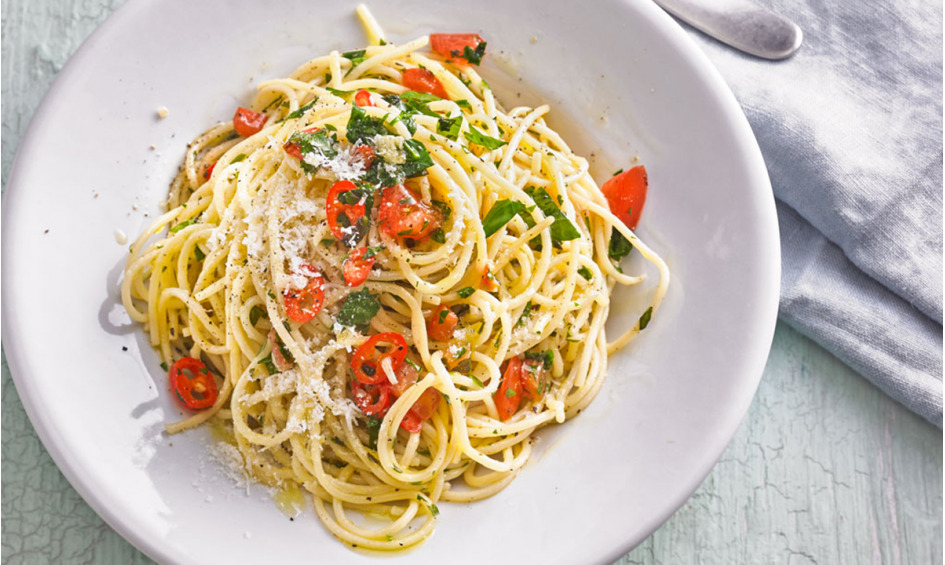
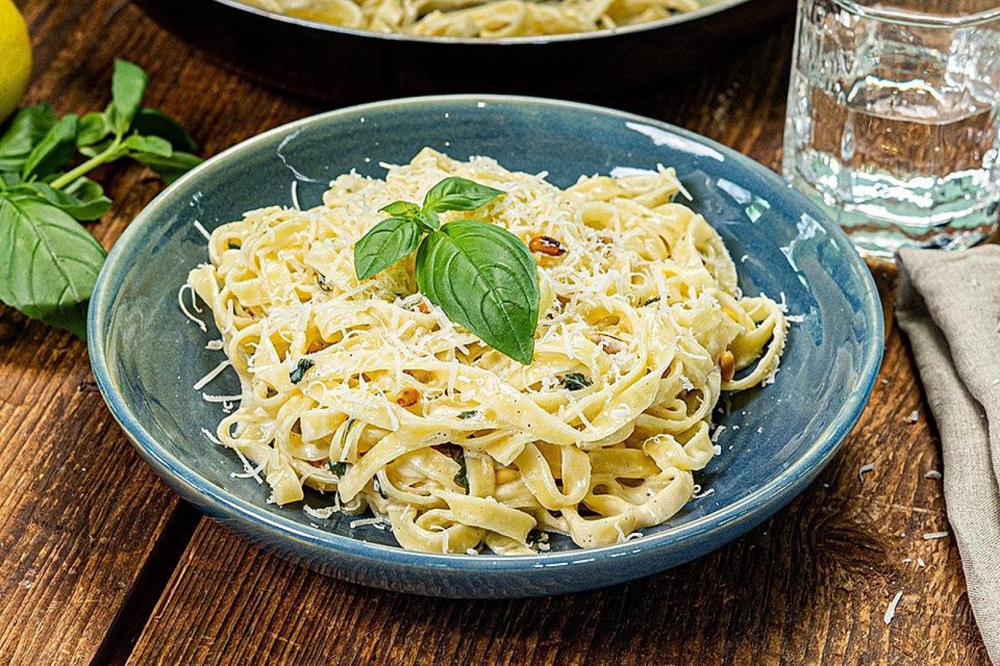

Die italienische Küche ist nicht nur in Italien selbst, sondern
weltweit beliebt. Wir zeigen euch, warum – mit 35 tollen Rezepten zum
Nachkochen und Genießen.
In Italien wird das Essen oft und gerne zum Abendprogramm. Ein
traditionelles Abendessen besteht in Italien aus mehreren Gängen – in
der Regel mindestens aus vier. Italienische Spezialitäten sind von
Region zu Region unterschiedlich, vielseitig und haben einige
Überraschungen zu bieten. In unserer Rezeptgalerie könnt ihr euch
durch einen Querschnitt der italienischen Küche klicken und viele
Rezepte mit Urlaubsflair entdecken.
Italienische Rezepte sind frisch, abwechslungsreich und einfach
lecker. Aus unseren 35 Rezepten könnt ihr euch euer eigenes
italienisches Menü zusammenstellen. Ladet ihr dann noch eure Liebsten
ein und stellt eine gute Flasche italienischen Weins auf den Tisch,
steht einem geselligen Abend nichts mehr im Weg. Wir wünschen buon
appetito!

(Foto: CK_Print-Magazin / Thomas Neckermann)
Ideen für ein italienisches Menü
Wenn ihr etwas Hilfe beim Zusammenstellen eines typisch italienischen
Menüs braucht, könnt ihr euch von unseren Vorschlägen für die
unterschiedlichen Gänge inspirieren lassen.
Zum Rezept: Spaghetti aglio, olio e peperoncino
Vorspeise
Antipasti
Den Start beim traditionellen italienischen Essen machen in der Regel
kalte Antipasti, gefolgt von warmen Antipasti. Das können eingelegte
oder gebratene Gemüsesorten wie Zucchini, Pilze, Paprika, Tomaten oder
Bohnen sein. Auch italienische Rezepte wie Bruschetta (geröstetes Brot
mit einer Tomaten-Basilikum-Mischung) oder Caprese (Mozzarella auf
Tomaten mit Basilikum) gehören zu den beliebtesten Antipasti-Varianten
– auch hier in Deutschland. Aber auch auf Fleisch basierende
italienische Spezialitäten wie Bresaola (getrockneter Rinderschinken),
Carpaccio (hauchdünne rohe Rinderfiletscheiben), Vitello Tonnato
(gekochtes Kalbfleisch in Scheiben mit einer Thunfischsauce) werden
als italienische Vorspeise gereicht.
Bruschetta italiana (Foto: hsiu)
1. Hauptgang
Pasta
Der erste Hauptgang (auf Italienisch: primi piatti) besteht in der
italienischen Küche meist aus Pasta. Hier kommen alle möglichen
italienischen Gerichte auf Pasta- oder auch Gnocchi-Basis zum Zug. In
einigen Regionen von Italien sind dagegen Risotto oder auch Suppen als
primi piatti beliebt. Bekannte italienische Pastagerichte, die als
erster Hauptgang dienen können, sind zum Beispiel Penne
all'Arrabbiata, Spaghetti Bolognese, Spaghetti Carbonara oder
Spaghetti aglio e olio.
Ein weiteres, leichtes Pasta-Rezept sind sommerliche Tagliatelle mit
Zitronen-Basilikum-Sauce. Durch die Zitrone ist das Gericht herrlich
frisch und überhaupt nicht schwer. Während die Tagliatelle kochen,
wird die Sauce zubereitet und schon steht die Pasta auf dem Tisch. Im
Video zeigen wir euch, wie schnell und einfach dieses Gericht
zubereitet ist. Besonders gut schmeckt Pasta übrigens mit frisch
geriebenem Parmesan(Parmigiano Reggiano).

Tagliatelle mit Zitronen-Basilikum-Sauce (Foto: Fabio Haebel)
2. Hauptgang
Fleisch- und Fischgerichte
In der italienischen Küche folgt auf den ersten Hauptgang traditionell
ein weiterer Hauptgang. Als secondi piatti dienen in Italien in der
Regel Fleisch- oder Fischgerichte. Aber auch frittierte Gemüsesorten
oder Eiergerichte können hier gereicht werden. Typische italienische
Gerichte für diesen Gang sind zum Beispiel Ossobuco alla milanese
(Kalbshaxe), Saltimbocca alla Romana (Kalbsschnitzel) oder auch
verschiedene Calamari-Varianten, die in Italien äußerst beliebt sind.
Dessert
Tiramisù, Panna cotta und Co.
Die italienische Küche hat auch beim Nachtisch viel zu bieten.
Besonders bekannte und beliebte italienische Desserts sind zum
Beispiel Tiramisù, Panna cotta, Zabaione, Panettone und natürlich
nicht zu vergessen das italienische Gelato. Nach dem Essen oder auch
als Ersatz zum Dessert ist in Italien auch ein starker Espresso immer
gern gesehen. Eventuell wird dazu eine kleine Backware wie Cantuccini
gereicht. Aber auch italienische Digestifs sind beliebt und weit
verbreitet – so etwa Grappa, Limoncello und Ramazzotti oder Averna.
Digestifs für ein italienisches Menü
In Italien gibt es verschiedene bekannte und typisch italienische
Digestifs. Während ein frischer, süßer Limoncello eher nach
Fisch-Gerichten serviert wird, eignet sich ein italienischer
Kräuterbitter wie Fernet Branca, Ramazzotti oder Averna vor allem nach
deftigen Gerichten.
Auch der italienische Grappa, ein Tresterbrand, ist ein beliebter
Digestif. Grappa wird aus vergorenen Pressrückständen bei der
Weinherstellung destilliert und muss mindestens 37,5 % Alkohol
enthalten. Grappa wird in Italien nicht kalt, sondern bei
Zimmertemperatur getrunken und passt auch hervorragend zum Espresso
oder Kaffee.